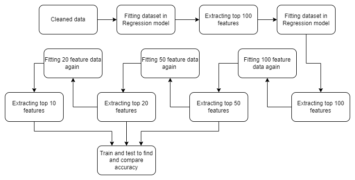
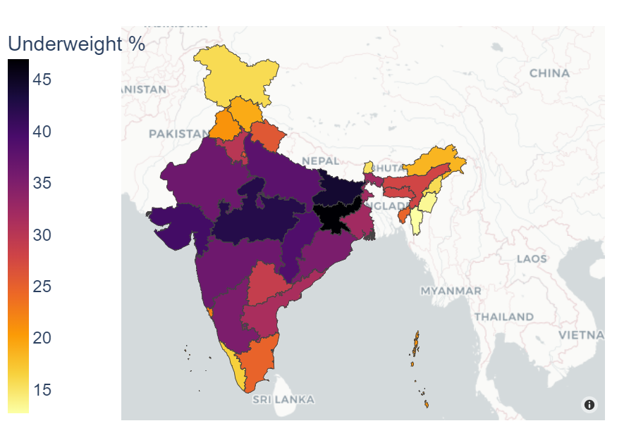
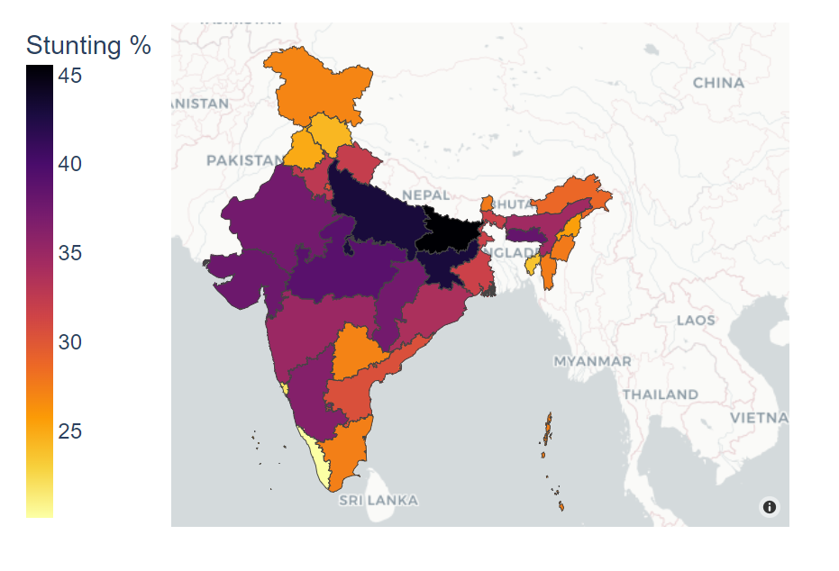
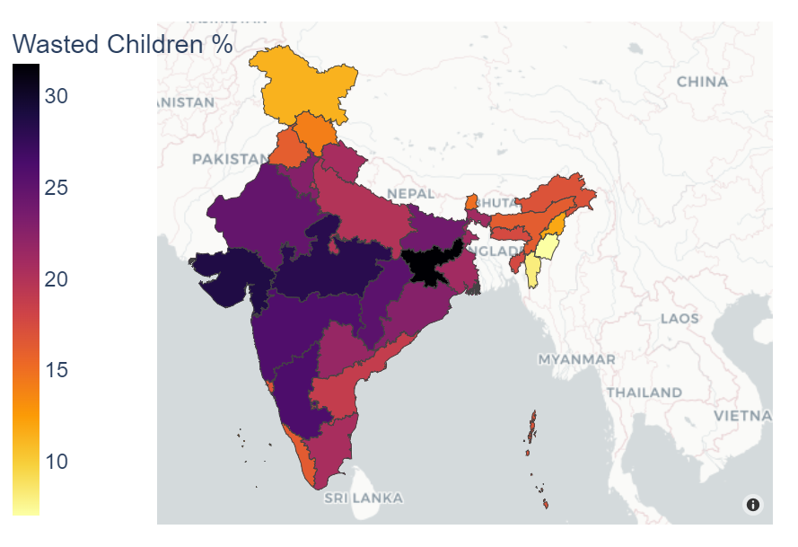
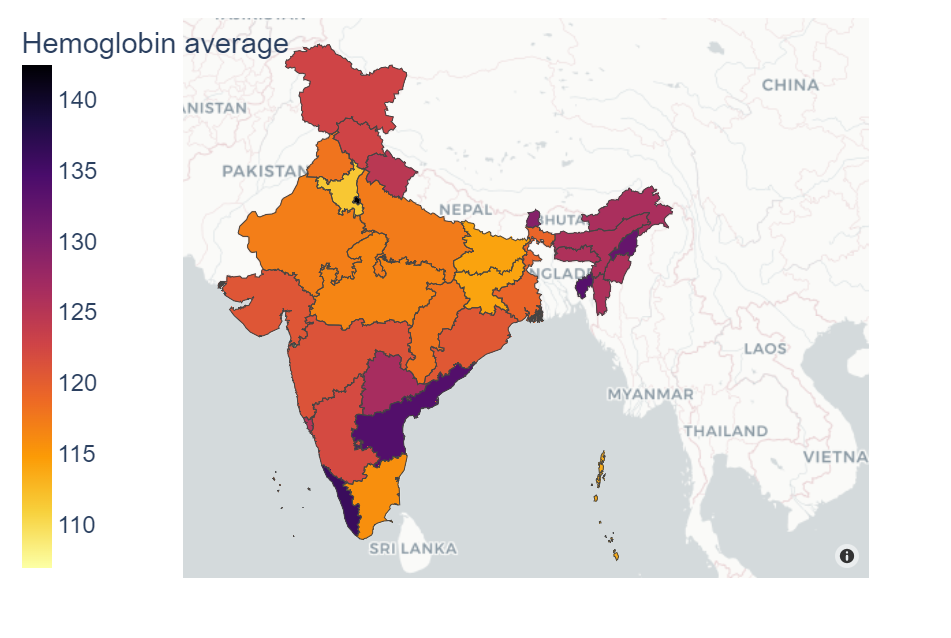
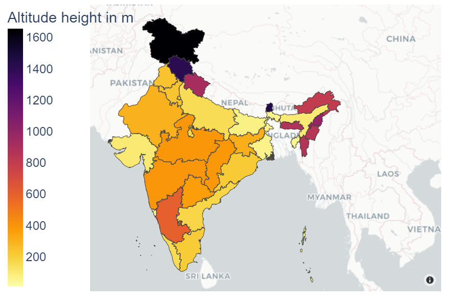
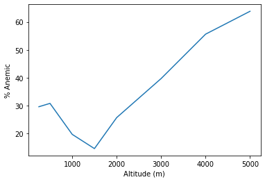

PROBLEM STATEMENT
Malnutrition and Anemia are some of the prime causes of infant mortality among various developing countries such as India. Our study aims to identify the most important features available in the Indian Demographic and Health Survey (IDHS) dataset and design a prognostic model for diagnosing malnutrition using these key features. Demographic and Health Checks (DHS) are conducted every 5 years nationwide, supplying data for an extensive range of tracking, monitoring, and evaluating pointers in the areas of nutrition, health, and population. In this project, we have taken the machine learning approach to identify the various features influencing malnutrition and have correlated its association to anemia, which has not been linked to existent literature yet. We have also identified the degree to which these features influence malnutrition, and have targeted location-specific features for the children living in various Indian states. We observe the effect on the 4 dependent variables provided by WHO
- BMI (Body Mass Index)
- HAZ (Height for Age z score)
- WAZ (Weight for Age z score)
- WHZ (Weight for Height z score)
METHODOLOGY
- Fit 329 features in a Random Forest regression model
- Find the importance of each feature using Mean Decrease in Impurity
- Select the top 200 features based on feature importance and fit these again to find the top 150 features
- Repeat until we find the top 20 and top 10 features for the output variables

RESULTS
Distribution of Malnourished Children



Haemoglobin Level Affecting Malnutrition

Cluster Altitude Affecting Malnutrition


Cluster Altitude v/s Anemia
- Y-axis represents the % of anemic children
- X-axis represents the altitude
- High altitudes(1000-2000): Lower erythropoiesis stimulating agents(ESA) and iron requirements compared with patients living at sea level
- Extremely high altitudes: exposure to lower partial pressure of oxygen, results in tissue hypoxia
